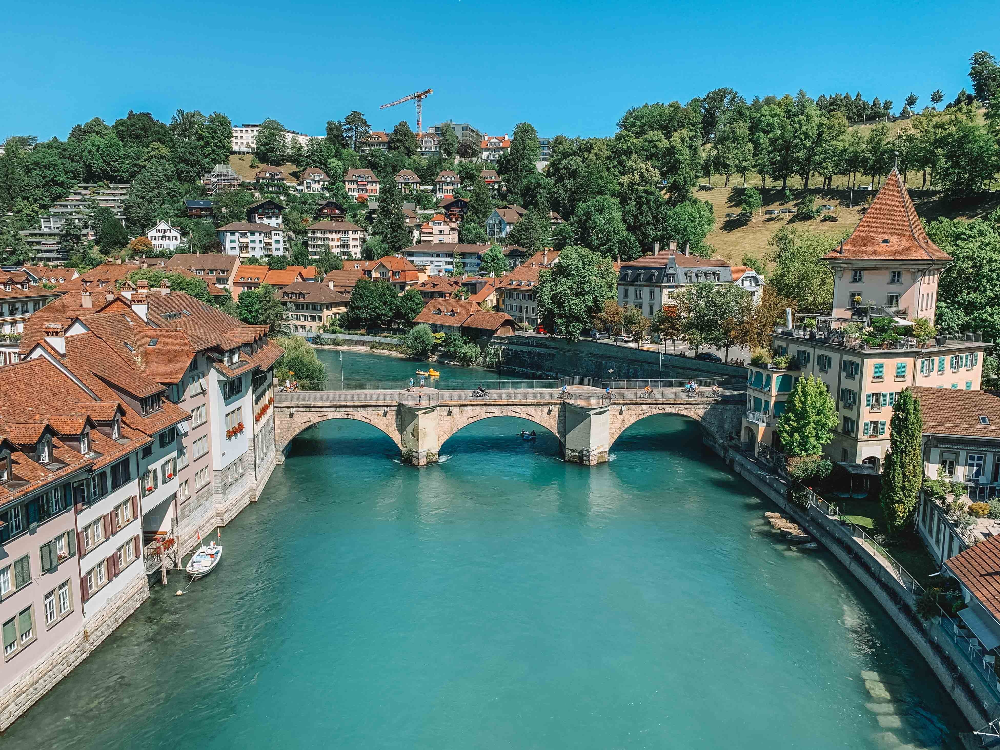
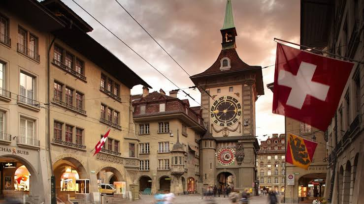
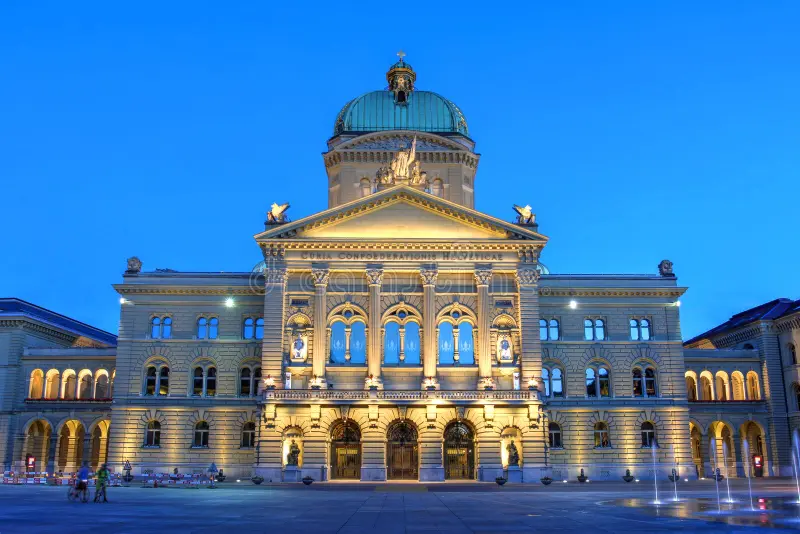
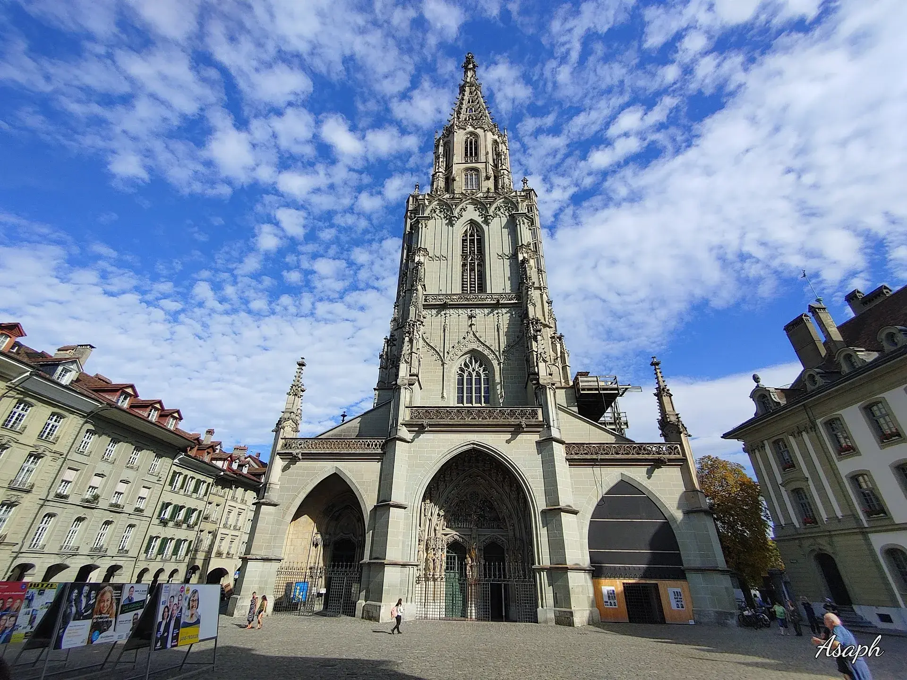
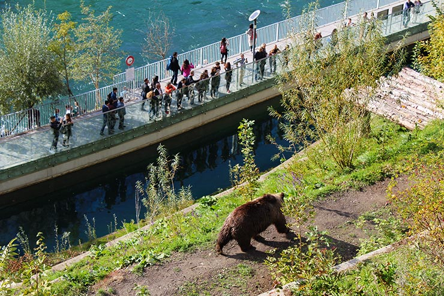
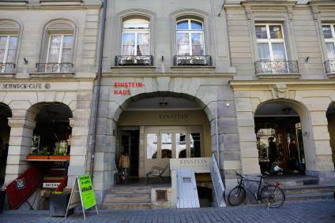
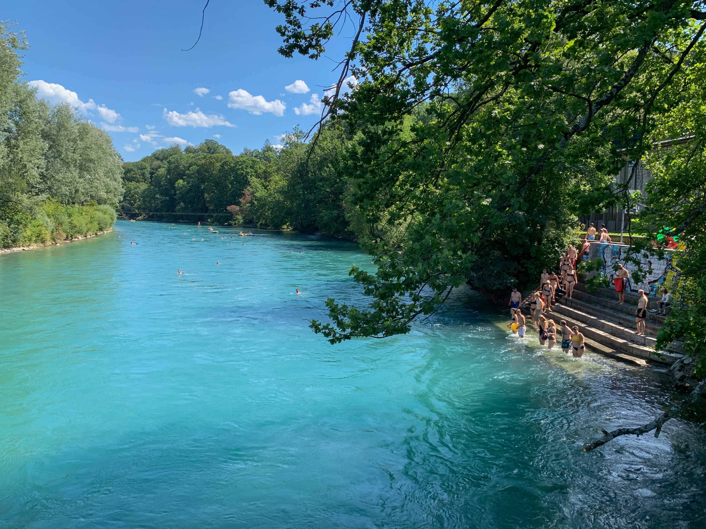

Por Lourdes Mello
Berna É a capital do seu estado (cantão homônimo) e funciona como a capital da Suíça, embora o país não tenha uma capital oficial.Construída às margens do rio Aare, a cidade é famosa por seu centro histórico medieval preservado, considerado Patrimônio Mundial da UNESCO desde 1983.
Principais Atrações:

Zytglogge:
Torre do relógio astronômico do século XV com figuras mecânicas que se movem a cada hora.

Palácio Federal (Bundeshaus):
Sede do governo e do parlamento suíço.

Catedral de Berna (Bernerse Münster):
A catedral mais antiga da cidade, com uma torre de mais de 100 metros de altura.

Parque dos Ursos (Bärengraben):
Espaço dedicado aos ursos, símbolo histórico da cidade.

Einsteinhaus:
Antiga residência onde Albert Einstein morou e desenvolveu parte de suas teorias.

Rio Aare:
Conhecido pela água limpa de tom azul-turquesa, onde moradores e visitantes costumam nadar no verão.